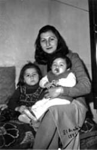
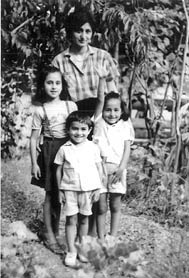
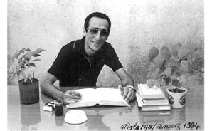
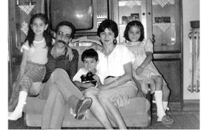
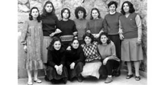

“Eşinizin İçeride Olmasına mı Yanasınız Çocuklarınızın Dışarıda Ayrı Kalmasına mı?..”
Şenay Delikanlı26
Eşim Olgun Delikanlı TÖB-DER Genel Yönetim Kurulu üyesiydi. Dev-Yol örgütlenmesi içinde devrimci mücadelesini sürdürüyordu. 12 Eylül 1980 Darbesi’nden 3 gün sonra Artvin’de gözaltına alındı. Jandarmanın işkencehanesi olarak bilinen Artvin Öğretmen Okulu’nda 5 Ekim 1980’e kadar kaldı. Daha sonra Erzurum’a götürüldü. Erzurum 9. Kolordu’da Dev-Yol davasında, 146/3 maddeden, örgüt üyeliğinden, Ankara’da ise TÖB-DER davasında 141/1’den yargılandı. Yani örgütü sevk ve idare etmek. TÖB-DER yasal bir kurumdu ama 12 Eylül’le beraber tıpkı diğer dernek ve sendikalar gibi illegal örgüt kategorisine sokuldu. 8 yıl hapis cezası, 3 yıl İzmit’te gözetim cezası, ömür boyu kamu hizmetlerinden men cezası aldı. Erzurum Askeri ve Sivil Cezaevi ile Malatya E Tipi Cezaevi’nde 5 yıldan fazla yattı ve tahliye oldu.
Darbeden Önceki Hayat
Ben Sinop’ta öğretmen olarak çalışıyordum. Evlendikten sonra Artvin’e geri döndüm. Eşimle 50. Yıl Ortaokulu’nda öğretmenlik yapıyorduk. Olgun okul müdürüydü, ben de öğretmendim. İkimiz de TÖB-DER üyesiydik. Olgun, okulun dışında kalan bütün zamanını TÖB-DER ve devrimci öğretmen örgütlenmesi için ayırırdı.
Çok güzel bir arkadaş grubumuz ve aile ortamımız vardı. Güzel bir başlangıç olmuştu ikimiz için de, çok mutluyduk. Arkadaşlık ilişkilerimiz çok güzeldi. Artvin küçük bir yer zaten, fazla tiyatrosu, sineması yoktur, sahilde gezilecek kordonu olan bir yer değildir mesela. Dolayısıyla insan ilişkilerinin yoğun olduğu bir yerdir, insanları, dostlukları çok güzeldir. Karşılıklı ev gezmeleri yapardık, uzun saatler süren sohbetlerimiz olurdu.
Çalışma ortamımız oldukça keyifliydi. 50. Yıl Ortaokulu’nda, öğretmen olarak kendini gerçekten bu işe adamış, severek mesleğini yapan, öğretmen okulları veya eğitim enstitülerinden yetişmiş arkadaşlarımız vardı. Hepsi yaptığı işin bilincinde olan insanlardı. Onlarla birlikte güzel bir çalışma hayatımız oldu. O günleri hep ararım gerçekten. Çok yorucu olurdu ama biz ondan asla yüksünmezdik. Örneğin bir Öğretmenler Kurulu toplantısı yaptığımız zaman bu 4-5 saat sürerdi. Gece 10’a kadar süren toplantılar hatırlıyorum. Öğrencilerimize daha iyi bir eğitim vermek için ne yapmamız gerekir, nasıl davranmamız gerekir onu konuşurduk. Örneğin çok basit bir şey, şimdilerde sigara içme yasağı getirildi ama o dönemde öyle bir şey yoktu. Öğrencinin yanında hiçbir arkadaş sigara içmeyecek, bahçede bile öğrenci öğretmenini sigara içerken görmeyecek demiştik. Bu şekilde öğrenciye daha iyi bir model olmak için çalışırdık. Benim çok uzun bir öğretmenlik yaşantım var, sonraki yıllarda gördüm ki kurullar sadece şu öğrencinin not ortalaması kaç, bu öğrenci geçer mi geçmez mi gibi konuların tartışıldığı son derece mekanikleşmiş kurullar olarak işliyor. Oysa ki 1980 öncesi dönemde yetiştirdiğimiz öğrenciler dershanesiz, özel öğretmensiz, kurssuz çok güzel okullar kazandılar, hayatta da hep başarılı oldular. Onlarla gurur duyduk her zaman. Bu biraz da o zamanki öğretmenlerin kendilerini işlerine ve öğrencilerine adamalarının bir sonucuydu.
1980 öncesi iki kızım oldu, üçüncü çocuğuma hamileydim. Ekonomik problemimiz yoktu, karı koca çalışıyorduk. O zamanlar birçok ailede olduğu gibi biz de kayınvalidem ve kayınpederimle birlikte yaşıyorduk. Kayınvalidem çocuklarıma bakıyordu. Kayınpederimin bir kırtasiye dükkânı vardı. Onu çalıştırıyordu. Ben de onları bir anne baba olarak kabul etmiştim. Sıcak bir ev ortamımız vardı.
Ülke geneline bakıldığı zaman darbe öncesi Artvin, sokak kavgalarının fazla görülmediği, adam öldürmenin yok denecek kadar az olduğu bir yerdi. Son derece rahattık. Karşıt grupların çatışması gibi bir durum çok gündemde değildi. Herkes evinde rahatça uyuyor, işine gidiyor, geliyordu.
İkimizin aileleri de CHP kökenli. Toplumsal olaylara karşı son derece duyarlı, yurtsever, çevre bilinci olan, eğitime önem vermiş insanların bulunduğu ailelerden geliyoruz. Ülke olayları, yaşananlar ister istemez gündelik konuşmalarımızın ana eksenini oluşturuyordu. Soframız her zaman arkadaşımız, eşimiz dostumuz, akrabamızla doluydu ve doğal olarak hep ülke gündemiyle ilgili konular konuşulurdu. Çocuklarımız da böyle bir aile ortamında büyüyorlardı.
Eşim TÖB-DER’deki çalışmaları ve siyasi görevleri nedeniyle özellikle hafta sonlarını ilçelerdeki toplantı ve seminerlerde geçirirdi. Öğretmen örgütlülüğünün iyi düzeye gelmesi için arkadaşlarıyla birlikte çalışırlardı. TÖB-DER dışında devrimci mücadele çalışmaları da devam ediyordu.
Boykot Ediyoruz
TÖB-DER’in aldığı eylem kararlarıyla iş bırakma eylemleri yapıyorduk. 1978 Kahramanmaraş olaylarının, 1. yıldönümünde biz öğretmenler bunu kınamak için iş bırakma eylemi yaptık. İş bırakmak TÖB-DER’in kararıydı. Öyle olmasının da ötesinde, onca insan öldürülmüş, katledilmiş, Maraş’ı kınamak suç olmaması gereken bir davranış. Ben toplu karar olsun, olmasın kınarım bir insan olarak. Biz o gün işe gitmedik. Onun ertesinde yaşanan süreçte Olgun, Ocak 1980’de okul müdürü olarak açığa alındı. Okulda müdür yok, sadece öğretmenler ve muavinler olarak eğitim, öğretime devam ediyoruz, işleyişte hiçbir aksama yok ama okulda müdür yok. İdare, müdür tayin etmeye çalışıyor, göndermeye çalışıyor ama bir müdür atanamadı, kimse gelmedi. Duyduk ki, görev verilenler de görevi kabul etmemişler. Şubat ayı böyle geçti. Mart ayına gelmiştik. Biz öğretmenler kurulu olarak toplandık, karar aldı arkadaşlar, beni müdür olarak teklif ettiler Artvin valisine, o da onayladı. Ben vekâleten, eşimin yerine müdür oldum okula. Ama buna özellikle Adalet Partisi’nin siyasileri, karşı görüşte olan insanlar çok tepki gösterdiler. “Biz kocasını aldık, yerine karısı müdür oldu. Bizim yaptığımız işin hiçbir önemi kalmadı!” şeklinde tepkiler oldu. Çok ses getirdi bu olay.
Bizim zaten TÖB-DER olarak söylediğimiz bir şey vardı: “Biz kendi yöneticilerimizi kendimiz seçeceğiz.” Bu durumda da bunu uygulamış olduk Artvin’de. Ben ağustosa kadar vekâleten bu görevi yürüttüm. Çok zor bir dönemdi aslında. Şöyle ki: 12 Eylül’ün biraz öncesi, çok fazla siyasi hareketlilik vardı. Dolayısıyla devrimci, demokrat ve yurtsever öğretmenler tayin ediliyordu. Hergün iki zarf geliyor okula, arkadaşlarımız farklı yerlere gönderiliyorlar. Tabii ki bu öğretmenler TÖB-DER’li. Fakat bu arada eğitim-öğretim yılı devam ediyor. Biz biliyoruz ki sene sonuna kadar yeni öğretmenler gelmeyecek, dolayısıyla giden öğretmenlerin dersleri boş geçecek. Biz idare ve öğretmenler olarak bu durumu bir veli toplantısında velilere anlattık. Tabii veli de öğrencisinin dersinin boş geçmesini istemiyor. Onlar da bizimle aynı şeyi savundular. Ben de okul müdürü olarak valiye çıktım ve rica ettim: “Bu öğretmenlerin hiç değilse sene sonuna kadar tayinlerini bekletelim, eğitim öğretim bitsin. Ondan sonra tebliğ edelim arkadaşlara, yerlerine gitsinler.” Vali de teklifimi uygun bulmuştu. Bu arada bizim bu ortamımızı bozmak isteyen, bu öğretmenler buradan dağılsın, gitsin diye gözetenler de var, onlar da bir taraftan TÖB-DER’li öğretmenlerin gitmeleri için baskı yapıyorlar gerekli yerlere. Çok da umurlarında değil, dersler boş geçmiş, geçmemiş. Böyle bir durum yaşıyoruz. Biz tayini çıkan öğretmenlerin sene sonuna kadar görevde kalmalarını bu görüşmelerle sağladık. Bu arada bize baskı uygulamaya çalışan, bu öğretmenler ayrılsın diyen arkadaşlarımız da kendileri gitmek durumunda kaldılar süreç içerisinde.
Birçok arkadaş il dışına sürgün edildi. Olgun da Kahramanmaraş’a sürüldü. Uzun süre rapor aldı. Yine çalışmalarına devam etti. Artık rapor alma olanağı kalmayınca okul müdürü olarak kararı kendi eşime ben tebliğ etmiş oldum. O da aldı, sonrasında gitmedi, 1980 Ağustos’unda istifa etti. Bir ay sonra da zaten darbe oldu.
Darbe Oluyor, Olgun Alınıyor
12 Eylül’le birlikte hayatımız değişti, hem de ne değişme! Her şey altüst oldu. Daha doğrusu her şey yeniden dizayn oldu, aile içinde roller değişti, yapılar değişti. Sıkıyönetim ilan edildi, sokağa çıkma yasağı var. Biz de bekliyoruz. Zira 3. gün Dev-Yol davası nedeniyle alındı Olgun. Artvin’de evinden insan gitmeyen çok az aile vardı. Herkesin ya annesi ya babası ya ablası, teyzesi, kardeşi veya kendisi alındı. İnsan yaşadığı yoğunluğun o an çok fazla farkında olamıyor. Gerçekten kendisine uzak bir durum yaşanıyormuş gibi geliyor. Polis ve askerler geldiler, son derece sakin bir şekilde bir iki kitaba baktılar, bir hoyratlık olmadı. Jiple gelmişlerdi, Olgun’u arabaya aldılar, götürdüler. Ters bir durum yaşanmadı. Özgür’e hamileydim, çok zor bir süreç yaşıyordum. Özlem kucağımda, Eylem de eteğime yapışmıştı babaları giderken. O an gözümün önüne 2. Dünya Savaşı filmlerinden sahneler gelmişti, hep onlar geçmişti kafamdan. Toplama kampları... Benzer çaresizlikler, hiçbir şey yapamıyorsunuz o noktada, bir alternatifiniz yok. Çocukların biri kucağımda, biri elimde, biri karnımda... Bunu bir türlü dillendiremedim, söyleyemedim ama kafamda olan hep oydu. Bugün hâlâ o filmleri izleyemiyorum, bakamıyorum, o kadar etkileniyorum o yaşananlardan.
Biz arkada kalanlar mahkemelerin çok uzun süreceğini, kısa sürede gelemeyeceğini biliyorduk. Arkasından TÖB-DER’den dolayı tutuklama çıktı. Olgun gözaltında ama televizyondan durmadan teslim ol çağrısı yapılıyor. Evde pür dikkat dinliyoruz haberleri, Eylem de babasının ismi geçiyor televizyonda diye seviniyor, “Babam ünlü oldu, babam ünlü oldu!” diye ellerini çırpıyor. Böylesi trajikomik bir durum. Ben bir yana, evde bir de kayınvalidem ve kayınpederim var. Kayınvalidem, Olgun akşam eve gelip kapıdan girmeden yatağa girmezdi. Biz yatar uyurduk, o öyle beklerdi kapıda. Şimdi bu anne çocuğunu hapse gönderdi. Tansiyon hastası zaten. Onun durumunu düşünebiliyor musunuz? Kendimi bir kenara koydum, çünkü o bir anne. Annelik başka bir şey. Kendi kendime dedim ki, sen burada hem bu yaşlı insanları teskin edeceksin, moral vereceksin, bunları ayakta tutacaksın hem bu eteğindeki çocukları hem de karnındakini düşüneceksin. Bunlar sağlıklı olursa, normal bir yaşam sürerse, içerideki insan da rahat edecektir, gününü doldurup gelecektir. Yoksa başka türlü olmaz. Bu rol bana düşüyordu.
Ben, Olgun alındıktan sonraki ilk okul gününde makyajımı yaptım, okuluma gittim, sınıfıma girdim ve öğrencilerin karşısında, o güne kadar nasıl ders veriyorsam, belki ondan biraz daha dik durarak dersime devam ettim. Öyle olması gerekiyordu. Ailem, çocuklarım ve öğrencilerim için öyle yapmak zorundaydım. İçimden üzülsem de, ağlasam da sıkıntılarımı asla dışarıya belli etmedim.
Olgun’u ve diğer gözaltına alınan insanları Artvin’deki Öğretmen Okulu’na götürdüler. Yani bir dönem orada okumuş öğretmenleri bu sefer işkence yapmak üzere yine aynı okula götürdüler. Günlerce haber alamadık, görüşemedik. Nerede olduğunu biliyoruz ama hiçbir şekilde orada ne olduğunu bilmiyoruz. Dışarıda Olgun ve arkadaşları ile ilgili revire kaldırıldıkları, durumlarının kötü olduğu haberleri dolaşıyor. Aklımıza bin türlü şey geliyor. Her gün iyi bir haber gelir mi diye yaşıyoruz. İnanılmaz gergin, bir o kadar da çaresiz bir durum.
Öğretmen Okulu’nun dışında bir duvar var, duvardan içeri giremiyoruz, almıyorlar zaten. Bir gün büyük kızım Eylem’le oraya gittik, belki görebiliriz diye. Eylem de 4 yaşında. Karşıda, uzak bir mesafede revir denilen bölüm var. Tutuklular üst kattaki cama geliyorlar, biz de uzaktan sağ olduklarını görüyoruz. Onunla teselli buluyoruz. Ertesi gün meğer Erzurum’a götürülecekmişler ama bundan haberimiz yok. Asker geldi, içeridekilerin Eylem’i istediğini söyledi. Anlık tereddüdümden sonra verdim Eylem’i, asker kucağına aldı, götürdü oraya kadar. Babası ve diğer arkadaşlarımız Eylem’i sevmişler, konuşmuşlar. O arada Olgun, Eylem’e minik bir pusula vermiş, onu da külotlu çorabının içine koymuş, bunu annene dışarı çıktığın zaman verirsin demiş. Asker Eylem’i geri getirdi, teslim etti. Ben kucağıma aldım, normalde çocuklar orada kâğıdı çıkarır “Anne bak, babam sana bir şey gönderdi” der, normalde öyle davranması gerekir. Eylem sözünü bile etmedi. Biz tel örgünün dışına çıktık, dolmuşa bindik; ancak o zaman dedi ki “Anne, babam sana bir mektup gönderdi” ve çorabından pusulayı çıkardı. Pusulada, “İyiyim, sağlığım yerinde, merak etmeyin. Bizi Erzurum’a götürüyorlar” yazıyordu. Erzurum’a götürüldüklerini o şekilde öğrendik.
O an insan hem çok üzülüyor hem çok seviniyor. Üzüntüm şuydu, demek ki biz evde bu konuda o kadar çok konuşmuşuz ki, çocuk bunun saklaması gereken bir şey olduğuna karar vermiş. Yani bu kâğıdı burada açarsam, bundan ailem zarar görecek diye bir çıkarım yapmış o yaştaki çocuk. Bunu Eylem’e yaşattığımız için üzüldüm. Aynı zamanda bu kadar tutarlı davrandığı ve Olgun’un nereye götürüldüğünü öğrendiğimiz için de sevindim.
Erzurum Günleri Başlıyor
Olgun ve arkadaşları Erzurum’a götürülen ilk gruptu. O gidiş çok zor oldu bizim için. Öğretmen Okulu’nda yaşananları ve işkenceleri sonradan duyuyoruz tabii ki. Aklımız almıyor bir türlü.
Olgun’u gözaltına aldıklarından sonraki ilk görüşmeyi Erzurum’a götürdüklerinde yapabildim. İki ay geçmişti aradan. Özgür’e hamileyim, doktordan rapor almak istiyorum Erzurum’a gidebilmek için. Doktor beni muayene etti, “Değil Erzurum’a gitmek, şu kapıdan bile çıkamazsın, seni hastaneye yatırmamız lazım, iyi değilsin” dedi. Ama ben gideceğim, aklıma koymuşum. Raporu aldım ve Erzurum’a gittim. İki ay sonra görmüş oldum Olgun’u. Aramızda 1 metrelik bir mesafe var. İki tarafta da kalın bir cam var. Aradan ses geçmiyor, telefonla görüşüyoruz karşılıklı. Görüşmeye geldiğinde şişmanlamış diye düşündüm. Olgun normalde zayıf ama sıhhatli bir insandır. Şişmanlamış ama sıhhatli bir görünüm de değil. Sonradan anladım tabii gördüğümün şişmanlık değil, şişlik olduğunu. Görüşme derken hepi topu birkaç dakikalık bir görüşmeden bahsediyoruz, o da bağırmakla geçiyor. Sağ görebildim, o kadar, çıkardığım sonuç buydu. Başka türlü bir şey konuşma şansınız yok. Yanınızda asker duruyor. Telefonlar doğru dürüst çalışmıyor.
Onun dışında mahkemeye gitme şansım olmadı pek. Olgun içerideyken Özgür doğdu. Bir taraftan onu emziriyorum, bu arada çalışıyorum, okula gidiyorum. Evde iki tane küçük çocuk var. Kayınvalidem, kayınpederim, birlikte oturuyoruz. Benim Erzurum’a gitmem çok zordu. Artvin-Erzurum arası yollar da bugünkü gibi düzgün değil. Görüşlere bile gidemedim çoğu zaman.
Her Yere Korku Hâkim
Artvin’de her evden birileri gittiyse de gitmeyen evler de var. Herkes bir sessizlik içerisinde, bir ölüm sessizliği çöker ya, aynen öyle bir sessizlik çöktü şehre. Sıkıyönetim de var, kimse de çıkmıyor sokağa. Böylesi bir şey. O güne kadar aynı sofrada yemek yediğimiz, içtiğimiz, çok samimi gördüğümüz arkadaşlarımızın bir kısmı selam dahi vermediler, çekindiler, belki korktular. Aslında o zamanlar çok üzülmüştüm bu duruma ama sonra sonra dedim ki insan yapısı, belki doğaldır. Buna hâlâ isim koyamıyorum, o arkadaşlarımı da çok eleştirmek istemiyorum ama bu tür bir davranış değişikliği birçok şeyi sorgulamama da sebep oldu diyebilirim. Buna karşılık bize çok destek olan, moral veren, evimize sürekli gelen arkadaşlarımız, eşimiz, dostumuz, akrabamız da vardı. Evimiz hiç boş kalmadı. Bunlar beni son derece mutlu etti. O sıkıntılı günlerimizde ve o dönemde üstelik, bu insanların yanımızda olması bize ayrı bir moral verdi. Ailemiz de bu anlamda yanımızda dik durdu, o da çok önemli.
Ağrı’ya Sürülüyorum
Darbe olmuş ama tayin kararnameleri okula gitmeye devam ediyor. Sonuçta ben hâlâ çalışıyorum ve tayinler de hâlâ sürüyor. Kıyım makinesi çalışmaya devam ediyor. Özgür doğduğunda arkadaşlarım gelmişti ziyarete. Bir hafta geçmiş, yataktayım hâlâ. Arkadaşlar konuşuyorlar, tayinler geldi, falan şu yere gidecek diye. Ben de dedim ki Ağrı olmasın da nereye olsa giderim. Ben de tayin bekliyorum çünkü. Meğer o gün tayinim gelmiş ve Ağrı’ya çıkmış. Daha önce orada çalışan arkadaşlarımdan Ağrı’nın yaşam şartlarının çok kötü olduğunu, o zor şartlarda öğretmenlik yaptıklarını dinlemiştim. Zor şartlarda öğretmenlik yapmaktan kaçmıyordum ama tıpkı Olgun’un Kahramanmaraş’a sürülmesi gibi bunun politik bir karar olduğunu ve o nedenle orada bizi çok zor günlerin beklediğini düşünüyordum. Biraz da bunun etkisiyle herhalde Ağrı olmasın demiştim, bana tam da Ağrı’yı uygun görmüşler.
Özgür’ün 40 günü çıktıktan sonra birkaç gün de raporum vardı, onlar da bitti. Yaz başı gibi Ağrı’daki okulda göreve başladım. Eylül ayında annem babam, çocuklarla gittik ve ev tuttuk. Ağrı’da tek başına bir kadın ve özellikle Artvin’den gelmiş biri olarak öğretmen olmak gerçekten zor. Artvin’e de çok bekâr öğretmen gelmiştir, biz onlara sahiplik etmişizdir, ev bulmuşuzdur, sorunlarını çözmede yardımcı olmuşuzdur. Onlar da rahat bir şekilde mesleklerini yerine getirmişlerdir. Benim orada tek başıma bir kadın olarak çalışmam dikkatleri çekti tabii ki. Boşanmıştır dediler ama o zamanın Ağrı’sında bu hiç de iyi bir şeye tekabül etmiyordu. Nerede bunun kocası, niye yok diye sorguluyorlar. Toplumun algısı böyle. Gittiğim ilk ay içerisinde hep bunlar konuşuldu, ekim ayında kurban bayramı geldi. Bayramda kayınpederim, kayınvalidem de geldiler. O çok büyük bir olay oldu, ha dediler bu boşanma olayı değil, başka bir şey var çünkü damadın annesi babası da geldi, hepsi buradalar. Sonradan fark ettiler tabii olayı.
Bayram bitti. Kayınvalidem ve kayınpederim Artvin’e geri gidecekler, annem de benimle kalacak ve çocuklara bakacak. Kaldığımız ev çok küçük, ev de denmez ya, iki odası var. Ev sahibim Şeker Teyze’ye kira çok yüksek diye yakınınca, Şeker Teyze “Bak, evinde hem tuvalet var hem mutfak var...” demişti. Bir zaman sonra anladım ki bunlar hakikaten lüks Ağrı’da. Kaldığımız “lüks” evde mutfak vardı ama birkaç ay sonra sular donunca onu da kullanamaz hale geldik. Annemin o evde 3 çocuğa bakması çok zor. Çocuklardan birini Artvin’e göndermem gerekiyor. Özgür meme emiyor, Özlem de çok küçük. Karar verdik Eylem’i göndereceğiz. Kayınvalidem Eylem’i oradan götürecek geriye, Artvin’e. (Ağlamalar) Bu anı yaşamak istemiyorum gerçekten. Her zaman aklıma geldiğinde çok duygulanıyorum. Eylem’le konuştum, Artvin’e neden gitmesi gerektiğini anlattım ama Eylem hem benden hem de kardeşlerinden ayrılmak istemiyor. Babaanne ve dedesiyle birlikte büyüdüğü için onlarla bir ayrı gayrılığı yok özünde ama şimdi burada da annesi ve iki kardeşi var. Ben kendimi tutuyorum, ağlamıyorum. En sonunda otobüsün yanına gittiğimizde ben dayanamadım artık, hüngür hüngür, çok yüksek sesle ağlamaya başladım ama Eylem ağlamıyor yine de. Annem çok üzülecek diye tutuyor kendini. O hiç unutamadığım bir andır. Yani nasıl olur, ben duramıyorum, çok fenayım, Eylem’in gözünden bir damla yaş düşmüyor. Beni o şekilde gördüğü için “annem daha fazla üzülecek” diye gözyaşı dökmüyor 5 yaşındaki çocuk. Yıllar sonra torunum doğup da Eylem’le torunumu başka bir şehirde bıraktığımda yine o sahneyi yaşadım. O geldi gözümün önüne...

Şenay Delikanlı, Özlem ve Özgür’le
birlikte Ağrı’da
Eylem geldi babaannesiyle Artvin’e, biz Ağrı’da kaldık, Olgun Erzurum’da... O zaman dedim ki anne olmak başka bir şey. Ben dışarıda, sıcak ortamda, evde çok iyi bakıldığını bildiğim çocuğum için bu kadar ağlıyorum, acaba kayınvalidem neler yaşıyor? İçeride işkencede mi, herkes neler neler anlatıyor, etrafta konuşuluyor, o da duyuyor, dinliyor. Ben en çok ona moral ve destek vermek için çaba sarf ettim. Kayınpederim o kadar dışarı vurmuyordu ama kayınvalidem için çok farklıydı.
Öyle bir şey ki eşinizin içeride olduğuna mı yanasınız, yoksa ailenizin, çocuklarınızın dışarıda ayrı kalmasına mı yanasınız. Son derece zor bir süreç.
Hayat bir odanın içerisinde geçiyor Ağrı’da. İnanılmaz, daha önce hiç yaşamamış olduğumuz bir soğuk ve kış geçirdik, eksi 50’leri vurdu. Su yok, hayat durdu resmen. Anlatılır gibi değil. İnsanların ne tür bir çaresizlik içinde yaşadığını da birebir görmüş oldum.
12 Eylül öncesi yaptığımız boykot ve direnişlerden dolayı ertesi yıl açıkta kaldım. O seneyi Artvin’de geçirdim. İnsan açığa alındığına sevinmez ama ben çok mutlu olmuştum, en azından çocukları bir araya toplayabilmiş, Eylem’in okula başladığı sene yanında olabilmiştim. Ağrı’da görev yaptığım üçüncü sene ise babam benimle kaldı. Eylem’i de yanıma aldım. İkinci sınıfı Ağrı’da okudu. O sene Özgür, babaannesi ve dedesiyle Artvin’de kalmıştı. Her sene bir çocuğumu Artvin’de bırakmak çok zordu ama yapacak da bir şey yoktu.
Bütün bu Ağrı sürecinde sürekli gözetim altındaydım. Bunu da biliyordum. Hatta bir şey için Emniyet’e gitmiştik, polis yanıma oturdu, daha önce oraya hiç gitmemiş, tanışmamış olmamıza rağmen “Kaç ay kaldı kocanın gelmesine?” diye sordu. Biliyorum ki izleniyor hareketlerimiz ama içimden de izlesinler de görsünler kaçak göçek bir şey olmadığımızı diyorum. Kimseden sakladığımız bir şey yok en nihayetinde.
Ağrıda’yken Erzurum’a gidiş gelişlerimde Olgun’la görüşlerimi özel izinlerle yapmaya çalışıyordum. Çünkü hafta içinde gidemiyorsunuz, göreviniz var. İzin almak, rapor almak zor. Hafta sonu görüş olmuyor. Dolayısıyla savcıdan veya komutandan izin alarak görüşmeye çalışıyorum. Bir de çocuklarla birlikte bütün bir aile gelip gitmek durumundasınız, soğuk, şartlar çok zor. Bizim görüşe gidişimiz benim bir maaşım kadardı. Çünkü annem, babam, ben, 3 de çocuk Erzurum’da Gez Oteli’ne gidiyoruz, 2-3 gün kalıyoruz, kısa kısa görüş yapıyoruz, dakikalar kısa, sonra dönüyoruz. Bayram öncesi inanılmaz bir masraf. Masraftan da öte, tek başıma ben gidemiyorum, çocuklar emzikli ya da peşimde. Bazen anne, baba birlikte gidiyorlar, onlar görüşebiliyorlardı. Öbür türlü de ben ya Ağrı’ya giderken ya Ağrı’dan gelirken mutlaka görüş yapmak istiyorum. Çocukları da o şekilde götürüyordum babalarına.
Özgür için tabii ki farklı bir zorluğu oldu. Ben bebekken de götürdüm ama çok sık görüşe gidemedik açıkçası. Özgür 2.5 yaşındaydı, hiç unutmuyorum, ilk defa bilinçli olarak babasını o görüşte gördü, algıladı. Tabii evde hep konuşuyoruz baba olarak biliyor ama babanın ne olduğunu bilmiyor. Öyle diyelim. Son dönemlerde 20 dakikaydı görüş, tel örgünün arkasından görüştük. Görüş bitti, gidiyoruz. Ben Özgür’ü elinden tutmuşum, dışarı çıkıyoruz. Başı geride, sürekli babasına bakıyor, gelmek istemiyor benimle. Ne konuştu ki 2.5 yaşındaki çocuk. O duygu işte... İlk defa orada babasıyla tanışmış oldu aslında.
Biz Ağrı’dayken, TÖB-DER davasından kesinleşen 8 yıl cezası nedeniyle 1983 Kasım’ında Olgun’u da Malatya E Tipi Cezaevi’ne götürdüler. Cezasının geri kalanını da orada tamamladı. Erzurum bize yakındı, hiç değilse Artvin’den Ağrı’ya gidiş gelişlerde Erzurum’dan gidip Olgun’u da görebiliyordum. Malatya hayatımızı daha da zorlaştırdı tabii ki.
Bu arada eşimin içeride olduğunu Eylem’in Ağrı’daki öğretmenine söylemedim. Nasıl yankı bulacağını bilemiyordum çünkü. Çocukları koruma anlamında saklıyordum, yoksa başka bir nedeni yoktu. İşi var, Artvin’dedir dedirttiriyordum. Ev sahiplerim karşı görüşte insanlar ama son derece düzgün insanlardı. Siyaseten başka da olsa görüşüyoruz, gidip geliyoruz birbirimi-

Şenay Delikanlı, çocukları Eylem,
Özlem ve Özgür’le birlikte Artvin’de
ze. Onların da haberi yok. Bu arada evimizde telefon yok. Ev sahibimin evindeki telefonu kullanıyoruz. Bir seferinde kayınpederim telefon etmiş, beni bulamamışlar. “Şenay’a söyle Erzurum’da görüş yapıp öyle geleceğim” demiş. Oradan anlaşıldı artık durumumuz. Zaten onlar tahmin etmişler, eşimin siyaseten cezaevinde olduğunu. Siyasi duruşunuz belli olunca insanların tavrı daha bir farklı oluyor. Karşıt görüşte de olsa sizin insani davranışlarınız, o insanlarla ilişkilerinizde size bir yer açıyor. Hatta bir arkadaşım bana dedi ki keşke bütün solcular senin gibi olsa. “Ne yapmış solcular, ne zarar gördün” diye sormuştum. Bir önyargı vardı insanlarda, insanlar sizi tanıdıkça karşıt görüşte olan kişiler bile saygı gösteriyor o noktadan sonrasında ama bu biraz da sizin elinizde. Kendi görüşünüzde olan kişi zaten sizinle paylaşıyor. Ağrı’da ailem yanımda da olsa, sonuçta sokakta, okulda tek başımayım, birtakım zorluklar yaşadım. Ama zor da olsa başardım. Tayin zamanım gelmişti. Olgun’un çıkması da yaklaşmıştı. Haydi dedim Ankara’yı isteyelim.
Ağrı’dan ağlayarak ayrıldım. Çok güzel arkadaşlarım, hâlâ devam eden dostluklarım oldu. Önemli olan o zor durum içerisinde, biraz fazla Polyanna’cılık gibi olacak ama güzellikleri bulup öne çıkarmak. Çünkü hayat devam ediyor. Çocuklar var, okula gidiyorlar. Onları bir şekilde sağlıklı büyütmek zorundayım. Tabii bu yaşadıklarımızdan çok etkilendiler. Çünkü her şey ortada konuşuldu, ben konuşmasam da başkaları konuştu. Onlar da duydu, gördü.

Olgun Delikanlı, Malatya E Tipi Cezaevi’nde
Çocuklara Anlatıyorum
Artvin’de işimiz kolaydı, hiçbir şeyi saklamaya gerek yoktu, insanlar sahip çıkıyordu. Orada eşim ve ben, beraber 8 yıl öğretmenlik yaptık. Artvin’deki tek ortaokuldu. Artvin’in bütün bürokrat kesimi, yerlisi, köylerden gelen çocukları, hepsinin öğretmeniydik. Bir de tanınan, bilinen bir aile olmak var. O anlamda bir zorluk yaşamadık ama Ağrı’da ve Ankara’da, bunu ben hep çocuklara tembihledim. Kimseyle bu anlamda konuşmayın dedim. Bu da çocukları korumak adına söylediğim bir şeydi. Çünkü karşı tarafın tepkisi nasıl olur bilemiyordum. Öğretmenin görüşü nasıldır bilemiyorum, çocuğa kötü davranır, davranabilir, bilemiyorum. Onun yaratacağı travmalar, ötekileştirilmek, konuşamamaktan daha derin yaralar açar diye düşünmüştüm. Çocuklarınıza hem yalan söylememeyi ilke edinmişsiniz hem de bildiği bir şeyi söylememesi gerektiğini tembihliyorsunuz. Üstüne üstlük bu sizin tercihiniz de değil, öyle yapmak durumundasınız. O nedenle bu tür şeyleri söylememelerini istiyordum onlardan.
Örneğin, Eylem ilkokuldaydı, hiç unutmuyorum, ödevi için Namık Kemal’le ilgili bir parça okuyorduk. Vatan şairi deniyor, Magosa’ya sürülüyor, niye gidiyor, suçlu mu? Suçsuz. O zaman; insanların suçsuz da olsa bazı dönemlerde fikirlerinden dolayı suçlandıklarını, ceza aldıklarını çocuğun anlayabileceği şekilde anlatmaya, rahatlatmaya çalıştım. Suçlu olarak görmesin, benim babam hapiste yattı diye düşünmesin, bunu aşsın diye...
Bir keresinde Artvin’deki evimizde balkonda oturuyoruz, aşağıda çocuklar oynuyorlar evin önünde, babaları geldi, çocuklar koşarak babalarına gittiler. Özlem bunu görünce dedi ki “Babalarını gördüler ya, şımarıyorlar”. Tabii bu sözün altında yatan nedenleri ben fark ediyorum. Bir anne olarak ne kadar o eksikliği kapatmaya çalışsanız da aile içinde herkesin yeri farklı sonuçta.
Hem çocuklar hem de aileler açısından çok zor bir süreçti. Onlara babanın eksikliğini hissettirmemek için bütün aile seferber olduk. Her birimiz çocuklar üzerine titredik, onların ihtiyaçlarını karşılamaya, psikolojik anlamda da rahatlatmaya gayret gösterdik. Hep bir sevgi ortamı içerisinde oldular aslında. Büyük bir aile olmanın avantajıydı bu. O anlamda şanslıydılar diyebilirim.
Özgür doğduktan sonraki beş yıl boyunca babasını tel örgüler arkasından gördü. Doğduğu zaman evde dede vardı. Erkek figürü olarak dedesine çok bağlandı. Ona karşı ayrı bir ilgisi oldu. Dedesi bir yerden geldiği zaman gider göğsüne yatardı. Ben onu görürdüm, onu hissederdim. Bir keresinde Özlem, bir bayram ziyaretinde evimize gelen bir erkek arkadaşımızı Olgun’a benzetti ve kucağından inmedi hiç. Bunlar benim gözlemlerim arasındaydı.

Olgun Delikanlı, Ankara’da ailesiyle birlikte
Olgun Çıkıyor Ama...
Ağrı’dan Ankara’ya geldik. Annemler de aynı dönemde Ankara’ya yerleşmişlerdi. Onlara yakın bir eve yerleştik biz de. 1985 senesi Şubat ayında babam ve ben, Olgun’u Malatya E Tipi Cezaevi’nden aldık ve Ankara’ya birlikte geldik. Çok mutluyduk tabii ki. En azından hayatımız yeni bir şehirde normalleşmeye başlıyordu. Ben Dikmen Lisesi’nde öğretmendim.
1980 öncesi yaptığımız boykotlarla ilgili bir mahkemem vardı. Mahkeme tam da bu arada sonuçlandı ve bana iki aylık bir hapis cezası verdi. Bu arada öğretmenlik yapabiliyorum ama iki aya yakın bir süre cezaevinde yatmam gerekiyor. Nasıl olacak? Ne garip bir şey, bunu hâlâ aklım almış değil. Gittik hâkimle konuştuk. Cuma akşamından pazar akşamına kadar iki gece, yani hafta sonu iki gece Ankara’da, Merkez Kapalı Cezaevi’nde, Ulucanlar’da yatacağım. Ona karar verildi. Düşünün devlet hafta içi öğretmenlik yaptırdığı kişiyi hafta sonu cezaevinde yatırıyor. Toplam 6 ay her hafta sonunu cezaevinde geçireceğim. Olgun yeni gelmiş, evdeyiz hepimiz, kızlarım küçük, ilkokula gidiyorlar, Özgür gitmiyor. Ben çalışıyorum. Cuma akşamı oluyor, saat yediye kadar teslim olmam gerekiyor. Olgun’la Ulucanlar’a gidiyoruz, beni bırakıyor kapıda. Ben giriyorum içeri, cumartesi, pazarı orada geçiriyorum. Pazar akşamı 7’de çıkıyorum, geliyorum eve, pazartesi sabah da okula gidiyorum. Hafta içinde de öğretmenlik yapıyorum. O okul müdürümün dik duruşunu ve yardımını hiç unutamam.

Şenay Delikanlı, Ankara Ulucanlar Merkez Kapalı Cezaevi’nde arkadaşlarıyla
(ayakta sağdan ikinci)
Hayatımda yaşadığım en büyük çelişkidir bu. Bundan daha büyük zikzak yaşamadım beynimde. Şöyle ki, cezaevine gidiyorum, orada farklı bir dünya var. Bütün kadın koğuşu tek, siyasiler ve adliler aynı yerde kalıyor. Farklı bir heyecan, farklı bir koşuşturma, söylem farklı, ortam farklı, her şey çok farklı. Pazartesi oluyor, geliyorum okula, öğretmenler odasına giriyorum. Öğretmenler odasındaki öğretmenlerin %80’inin konuşması bana boş geliyor. Diyorum ki bu öğretmenler ne verecek sınıfta öğrencisine. Öyle bir çelişki yaşıyorum ki anlatamam. Öğretmenler odasında, uzunca bir masamız var, etrafında oturmuşuz, bir arkadaş anlatıyor. Ben konuşmuyorum sadece dinliyorum. Küçük bir çocuğu var, bakıcı kadın bulmuş. Bakıcı kadın evde yemek yiyor diye yaptığı dolmayı tencereyle tuvaletteki şamandıranın üstüne koymuş. Bunu anlatıyor. Bu değil öğretmen, insan olamaz. Cezaevine gidiyorum, orada insanlar bir dilim ekmeğini paylaşıyor, simidini paylaşıyor, şeker gelmiş sayıyla herkese. Oradaki eşitlik, anlayış ve düzene bak, buradaki konuşulana bak... Çıldırma noktasına geldiğimi hatırlıyorum. İnanılmaz bir şeydi bu benim için.
Cuma günü okul paydos olunca, pazartesi sabah da açılırken İstiklal Marşı söylenir, bayrak göndere çekilir ya, o cuma günü müzik öğretmeni gelmemiş. Ben de cuma 7’de cezaevine gideceğim. Okul müdürü de beni tanıyor, geçmişimi, nasıl bir öğretmen olduğumu, nerelerden geldiğimi biliyor. Mikrofonu aldı, “Şenay Delikanlı, İstiklal Marşı’nı okutmak için kürsüye gelsin” dedi. Toplanmış bir sürü öğretmen ve öğrenciye bir müzik öğretmeni kadar olmasa da İstiklal Marşı’nı söylettim. Bundan iki saat sonra da “diğer vazifemi” yerine getirmek üzere Ulucanlar’a gittim.
Cezaevindeki arkadaşlar beni karşılıyorlardı cumaları. Öyle güzel insanlarla tanıştım ki. Bir merdiven var avluya inen. O merdivenden inerken sizin ne olduğunuz mahkûmlar tarafından biliniyor. Şöyle ki: siyasi mi, adli mi? Onlar benim inişimden hangi fraksiyon, hangi siyaset diye tahmin yürütmüşlerdi zaten. Otururduk, konuşurduk, sohbet ederdik. Saat 7’de geleceğimi biliyorlardı, giderdim ki çay demlemiş, beni beklemişler. Şeker götürürdüm onlara, çikolata götürürdüm, onları paylaştırırlardı. Çocuklar gibi sevinirlerdi. Abla derlerdi bana, hepsi benden küçüktü. Orada 2 gün yatardım, dinlenirdim (gülmeler), pazartesi gelir derse girerdim.
Altı ayın sonunda tahliye oldum. Bu sefer de Olgun beni Ulucanlar’dan teslim aldı ve eve getirdi. Bu tuhaf cezaevi sürecini de böyle sonlandırmış olduk.
Bu cezaevi sürecimi çocuklarıma 30 yıl boyunca hiç söylemedim. Ailem biliyordu ama çocuklarımın hiç haberi olmadı. Onlar tabii ki her cuma, anne nereye gidiyorsun diye soruyorlardı. Ben de para kazanacağım, çalışıyorum, sizi yazın tatile, Antalya’ya götüreceğim diyordum. Bir de yapamayacağım şey için asla söz vermem çocuklara. Kız kardeşim Antalya’daydı ve o yaz onun yanına gidecektik. Beni para biriktiriyorum diye bildiler bu yaşa kadar da. O zaman söylemem çok mümkün değildi. Uzun bir ayrılığın sonunda babalarına kavuşmuşlardı, ikinci bir travmayı annelerinin gidiyor olduğu gerçeğiyle yaşatmak istemedim. Çünkü bunu anlamlandırabilecek bir yaşta da değillerdi. Bu zamana kadar niye söylenmedi onu bilmiyorum işte, belki de araya hayat girdi…
Hayat Devam Ediyor
Olgun ve ben öğretmen olmak üzere yetiştirilmiş iki insandık. Olgun cezaevine girmeden önce de bu mesleği yerine getiriyordu. Fakat aldığı ceza, çıktıktan sonra bildiği tek meslek olan öğretmenlik yapmasını yasaklamıştı. Darbe sonrası dönemin devrimcilere en büyük cezalarından biri de buydu, sevdikleri, bildikleri işlerden menedilmek. Diğer birçok arkadaşımız gibi Olgun da para kazanmak için farklı alanlara kaymak durumunda kaldı. Tabii ki Ankara’ya gelmiş olmak ekonomik anlamda da çok zorladı bizi. Bu yükün önemli bir kısmını sırtlanmak da bana düştü diyebilirim. Çoğu zaman hafta sonları da kurslarda çalışarak ek gelir kazanmaya çalıştım. Cezaevi sürecini arkamızda bırakmıştık ama bu kez de finansal mücadele başlamıştı.
1980’lerin sonuna doğru birçok arkadaşımız cezaevinden çıkmaya başlamıştı. Herkes aynı darboğaz ve çalkantılardan geçiyordu. Bütün bunlara rağmen tekrar bir toparlanma süreci başladı. Egit-Der, Eğit-Sen çalışmaları başladı. Olgun hiçbir şey yaşanmamış gibi bu süreçlerin içinde aktif olarak yer aldı. Daha sonra ÖDP’nin kuruluşunda ve sonrasında önemli görevlerde bulundu. Cezaevinden çıktıktan sonra da devrimci mücadeleyi hiç bırakmadı. Heyecanından hiçbir şey eksilmemişti.
Psikoloji
Darbe dönemi ve sonrasında profesyonel anlamda psikolojik destek almadık. Ailemin desteği benim için çok önemliydi. Kendi ailem de eşimin ailesi de bu süreçlerin hiçbirinde bizi yalnız bırakmadılar. Bu bize çok büyük bir moral kaynağı oldu. Evde tabii ki üzüntüler ve sıkıntılar oldu ama ben hep bunları bertaraf edebildim. Ağlamadan, ezilmeden, dik durarak ve dirençli olarak kaldığım yerden devam ettim. Her şeye rağmen pozitif bir insan olmayı başarabildiğimi düşünüyorum. Her çaresizlikte bir çıkış yolu bulurum, bulmak zorundaydık o ortamda. Ben de öyle yaptım ve o süreci öyle atlattık.
Her şeyden önce çocuklarıma moral vermek durumundaydım. Hiç unutmuyorum Özgür bebekti, emziriyorum, bir an gözlerim doldu, çocuk memeyi bıraktı o an. Onu hissetti. Bakarsan kimsenin görmediği, kendini koyverebilirsin diye düşündüğün bir an. Kendi kendime söz verdim, sen eskisinden daha güçlü olmak zorundasın dedim.
Otuzlu yaşlardaydım Ağrı’da öğretmenlik yaptığımda. Doğal olarak her gün okula gitmeden önce saçımı tarıyorum aynanın karşısında. Okula gidiyorum, tam kapının girişinde öğretmenler odasında bir boy aynası daha var. Onun da önünden her odaya girişte geçiyorum. Hiçbir şeyin farkına varmamışım, Artvin’e geldim yazın, Artvin benim yerim, benim memleketim ya, insan kendi yerinde daha güçlü hissediyor kendini. Aynada kendime bakarken saçımın beyazlamış olduğunu fark ettim. O güne kadar görmemişim saçımın beyazladığını, o gün fark ettim. Bu bir günde olmadı ya... Kafam o kadar dağınık, o kadar çok şeyle meşgul, o kadar karışık ki kendimin farkında değilim. Böyle bir durumdu o. Saçım beyazlamış ve ben bunu ancak Artvin’e gelip aynaya baktığım zaman görüyorum. Çok sonraları ben 50’li yaşlara geldiğimde, eşimin bir tanıdığıyla karşılaştım “Şenay Abla, ne kadar gençleşmişsin” dedi bana. Aradan 20 sene geçmiş, insan yaşlanır değil mi, gençleşmez. “Seni çok farklı gördüm” dedi. Aslında onun gördüğü, ifademin normal hale gelmiş olmasıydı, rahatlamış olmamdı.
O çaresizlik içerisinde nasıl rahat bir ifadeniz olabilir ki? Olgun’un içeride olması sebebiyle yaşadığımız sıkıntılar bir yana etrafımızda da ölüm ve işkence haberlerinin ardı arkası kesilmiyordu. Tanıdıklarımız içinde vurulanların, işkencede binadan atılan, kaybedilen gencecik çocukların haberlerini alıyorduk. Bunları duyunca Olgun’un içeride olduğuna şükrediyorduk resmen, en azından sağdır diyorduk. Düşünün ki yakınlarınız çok daha büyük yıkımlar ve buhranlar yaşıyor, siz böylesi bir durumda eşim cezaevinde demeye bile utanıyorsunuz. Ama o yaşanan çaresizliklerin tarifi imkânsız. Bundan daha fenası olamaz deyip ertesi gün daha fenasını duyduğumuz bir zaman dilimidir darbe dönemi. Çok iyi hatırlıyorum, Abdullah Gülbudak’ın ölüm haberi gelmişti. O da TÖB-DER içerisinde görev yapan, devrimci öğretmen örgütlenmesinde yer almış bir arkadaşımızdı. Ankara Merkez Kapalı Cezaevi’nde yatıyordu. Tarifsiz üzülmüştük. Kendi kendime demiştim ki, Olgun geri gelsin de her şeye razıyım. İşte böylesi bir zamanda insanın saçım beyazlıyor mu beyazlamıyor mu diye düşünmek aklının ucundan bile geçmiyor. Yüreğiniz ağzınızda yaşıyorsunuz.
Hiç Unutamadığım Bir An
Ağrı’da geçirdiğimiz ilk kışın ardından ilkbaharda kayınvalidem ve görümcem Eylem’i de alıp Ağrı’ya geldiler. Bir zaman sonra “ne zaman döneceksiniz” diye soruyorum. Ortada konuşuluyor, ay başında gidelim diyorlar. Eylem de benden bir bilezik istiyor, etrafındaki çocuklardan görmüş herhalde. Ben de söz verdim, aybaşında alacağım diyorum. Ertesi gün, “Anne ne zaman gidiyoruz biz?” diye sordu. “Aybaşında” dedim. “Aa bilezik alacaktın” dedi. “Aybaşında alacağım” dedim. O an yüzünde oluşan ifade hayatım boyunca gözümün önünden hiç gitmedi. Bir an mutluluk, bir an üzüntü... Aybaşı bir güzel olayı yaşatacak, bir de ona göre kötü, üzüntülü bir şey yaşatacak. Bu iki duygunun yarattığı değişimi görmüştüm yüzünde. Daha çocuk çünkü. Bütün bunlara rağmen benim çocuklarım çok şanslı çocuklardı. En azından sevgiyle bakılıyorlardı. Bundan mahrum olan aileler vardı o dönemde. Annesi babası içeride olan ya da farklı durumların ortasında kalan ve bakılamayan çocuklar da vardı.
Bugünden Bakınca
İçinde bulunduğumuz durumdan yüz kızartacak, çocuklarımıza miras olarak bıraktığımız kötü bir leke yok. Olgun, onurlu bir mücadele verdi. Keşke şöyle yapsaydı diyeceğim hiçbir şey yok. Tüm bu süreçlerde eşime hiç kızgınlık duymadım. Hayatımız boyunca insanlara yardımcı olmaktan, devrimci olmaktan, bilimi öğretmekten, güzellikleri öğretmekten asla vazgeçmedik. Hâlâ da aynı şeyi yapıyoruz. Güzel bir gelenekten geldik. Davamızda haklıydık, tam bağımsız Türkiye demek, petrolümüz, madenlerimiz, suyumuz bizim olsun demek suç mu? Biz bunları, bu güzellikleri savunduk. Bunda suç olacak bir şey görmedim. Görmüyorum da. İşimiz eğitimdi, Olgun da diğer öğretmen arkadaşlarımız gibi TÖB-DER bünyesinde yürütüyordu bu mücadelesini. Bütün yaşamını da bu mücadeleye adadı. Halkın çocukları, daha iyi eğitim alsınlar, daha güzel, demokratik bir ülkede yaşasınlar diye uğraştık. Şimdi seneler sonra görüyorum ki insanlar kendi çocuklarının eğitimi için, yeni 4+4+4 sisteminden dolayı kaygılanıyorlar. Oysa ki bizler bütün mücadelemizi bu anlayış hâkim olmasın diye vermiştik. Ne yazık ki biz bu mücadeleyi verirken toplumdan da büyük bir destek görmedik. Birçoğumuz salt fikirleri sebebiyle en güzel yıllarını cezaevlerinde harcadı, türlü işkence tezgâhlarından geçirildi. O da yetmedi hâkimi, savcısı, komutanı, öğretmeni, bakkalı, doktoru, aklınıza gelebilecek herkes geride kalanlara hayatı dar etmeye devam etti. Artvinli dedi, öğretmen dedi, bunlar anarşist, terörist çocukları dedi. Elinden geleni ardına koymadı. Şimdi herkes hükümetten şikâyet ediyor, eğitim elden gitti diyor ama aynı zamanda istiyor ki her şey gökten zembille insin. Gerek arkadaş çevremde, gerekse toplumda “Bu insanlar bu kadar mücadele verdiler, yaşananlara bak!” dediğimiz zamanlar olmadı değil. Arkadaş ortamında daha seçici oldum. Konuşamadım bazı insanlarla, ne kadar boş konuşuyor, ne kadar anlamsız şeyler söylüyor, biz nerelerden gelmişiz, ne idealler için uğraş vermişiz, insanlar ne kadar duyarsız, çevresinde olup bitenlerin farkında değil, yaşananların farkında değil dediğim oldu.
Dolayısıyla darbe ve sonrası çok şey öğretti bana. Olgun’un alındığı dönemde biz 5 yıllık evliydik. 12 Eylül sizden ne aldı derseniz bu gençlik yıllarımı aldı. Çocuklarımın o küçük yaşlardaki doğum günlerinde babalarının resmi var masanın üstünde. Bu çok önemli bir eksiklik, çok duygulu anlar. Bunları aldı götürdü ama bütün bunların yanında ayakta durmayı öğretti. Belki özünde var olan; fakat fazla açığa çıkmamış kendime güvenimin daha da gelişmesine yardımcı oldu. Çocuklarıma, öğrencilerime, çevreme karşı dirençli bir insan modeli çizmeye çalıştım. Kendimi işime verdim çok çalıştım, işkolik oldum diyebilirim. Ekonomik anlamda tabii ki zorlandım, özellikle Ankara’ya geldikten sonra. 1980’den sonra çok şey değişti. Özal’ın getirdiği neoliberal politikalar, modeller sonucu bir evde 5 kişi varsa beşi de çalışacak duruma geldi. Böyle olunca benim çalışmam iki katına çıktı. Hafta sonu kurslara gittim, emekli olduktan sonra dershanelerde çalıştım, başka işler yaptım. Hayatımın hiçbir döneminde böyle yan gelip yatan bir insan olamadım. Sürekli bir çalışma içerisinde, çevreme de bu anlamda model olmuş bir insanım. Her şeyimi ama her şeyimi, gezmeyi, sinemayı, eğlenceyi bir tarafa bıraktım ama çocuklarımın üzerinde durdum. Onların yaşları geçerse o tarih bir daha geri gelmeyecekti, eğitimlerinin zamanında ve iyi olması gerekiyordu. O günün şartlarında yapabildiğimin en iyisini yapmaya çalıştım. Sonuçlarını da aldım. Bu da bizi çok mutlu etti, çocuklarımla hep gurur duydum. Bugün geriye dönüp bakıyorum, yıllar geçtikçe insanın öğretmenlikte de hayatta da tecrübesi arttıkça, diyorum ki keşke şöyle yapsaydım, çocuklarımı şöyle yönlendirseydim ama yine de pişman değilim. O noktaya gelmiş olsam yine de aynı şeyleri yaparım.
Bu anlamda çocuklarımın hep siyasetten uzak durmalarını istedim açıkçası ama süreç içerisinde onlar yine de kendi duruşlarını sergilediler.
Asla yaşadıklarımızla kaldık demiyorum. Bunu da hep söylüyorum, 1970’li yıllardan başlayarak, 1980’li 1990’lı yıllarda devam eden bu süreçte solcular, devrimciler insanlara, topluma hak aramayı öğretti. Bugün HES’lere karşı duruyorsa insanlar, madenlerini satmamak için pankart açıp eylem yapabiliyorsa, kürtaj karşıtlığına dur demek için kadınlar örgütlenip sokakta eylem yapabiliyorsa, YÖK’e karşı duruluyorsa işte bunlar devrimcilerin eseridir. Kesinlikle, altını çiziyorum. Bugün Şavşat’ın bir köyünde, İkizdere’nin bir köyünde, Ege’de Bergama’da köylüler ayaklanıyorsa bunların hepsinin mi kökü dışarıda, öyle suçlandık ya hepimiz “kökü dışarıda”... Suyunu alıyorsun adamın elinden, ağacını alıyorsun, ormanını alıyorsun, hayatını bitiriyorsun bir noktada, yaşam alanını daraltıyorsun: Bunun farkına vardı insanlar, bu bilinçlenme oralara kadar ulaştı. Pankartını alıp çıktı sokaklara, meclise kadar eylem yapmayı öğrendiler. Ne için? Kendi gelecekleri, yaşamları için, benim için değil. Gündelik yaşamda insanlar bu mücadele biçimini öğrendi. Bu çok önemli bir katkıdır toplumsal mücadelenin filizlenmesi için. Tabii ki 12 Eylül silindir gibi ezdi geçti diyoruz ama yine de mücadele devam ediyor gördüğümüz kadarıyla. Sürmek zorunda. O mücadele olmazsa hayat da biter en nihayetinde.
12 Eylül Davası
Ağrı’dan Erzurum’a gitmiştim. Görüş saatleri bitmiş. Olgun’la görüşebilmek için izin alacağım savcıdan. Savcı olmaz dedi, komutana yönlendirdiler. Asker beni garnizonun kapısından aldı, komutanın odasına çıktık. Komutan “Ne iş yapıyorsun” dedi, öğretmenim dedim. Nerelisin diye sordu, Artvinliyim dedim. “Hem öğretmensin hem Artvinlisin, kocan içeride ama sen dışarıdasın” diye karşılık verdi. Ne cevap verilir ki buna? Kucağımda Özgür, 1 yaşında. Özlem’in elinden tutmuşum, böyle duruyoruz karşısında. Salonun ortasında heykel gibi kalakaldım. Ağzımdan bir şey çıkmıyor, bir cevap veremiyorum ama söz, iki dudağımın arasında. Versem, “Atın bunları içeri” diyecek, kendini anlatana kadar 6 ay geçecek, olan yine çocuklarıma olacak. Artvinli olmak, öğretmen olmak suç. Ben ömrümü öğrencilerime ve eğitime adamış bir insanım, benden ne istiyorsun? Bu nasıl bir mantık? Bugün 12 Eylül’ü yargılayacaklarını söylüyorlar. Yargılanacak olanlar aynı zamanda bunlardır. Bu zihniyettir. Bu zihniyet yargılanmadığı sürece hiçbir sonuca varamayız. İki kişiyi suçlu bulup içeri atmakla 12 Eylül’ü sorgulamış olmuyoruz.
Keşke diyorum, bu noktada, tam anlamıyla bir yargılama yapılıp bu anlayış, bu zihniyet, bu yapı mahkûm edilebilse ama hiç zannetmiyorum bu sonuca ulaşacaklarını. Bunun göstermelik bir şey olduğu düşüncesindeyim. Keşke yargılansalar, keşke cezalarını alsalar, 90 yaşında da olsa haksızlık ve zulüm yapmanın, insanların hayatına mal olmanın, fikirlerinden dolayı insanları yok etmenin yanlarına kalmayacağını gösterebilsek. Yine de öyle bir duygu ve düşünce yapısına sahibim ki ben bunları yaşadım, benim çocuklarım bunları yaşadı, onlar ve onların çocukları da bunları yaşasın diyemiyorum.
Darbe zihniyetinin başka boyutlarda hâlâ devam ettiğini düşünüyorum.
Biz devlet için çalıştık, devlet ne dediyse onu yaptık diyen herkesin de cezalandırılmasını istiyorum. Birini ezerek, döverek, sakat bırakarak mı oluyor bu işler. Adalet sadece o gün veya bugün haksızlıklara uğrayanlara değil, hepimize lazım. Öyle bir toplumuz ki ucu bize dokunmadan hiçbir şeyi anlayamıyoruz. Bizim meselemiz değil deyip kafayı çevirmek, şimdiki yaşananlar da gösteriyor ki, bir toplum olarak geriye götürüyor bizi. Önce toplum 12 Eylül’le yüzleşmeden, komşusuna, dostuna, müşterisine 13 Eylül sabahı sırtını dönenler özeleştirilerini yapmadan sahici bir yargılama sürecine girebileceğimizi sanmıyorum. Toplum, kendi utancıyla yüzleşmeden yapılan haksızların hesabını başkalarından sormayacaktır.
26 1952 doğumlu. Emekli öğretmen. Eşi Olgun gözaltına alındığında 30, kendisi ise 28 yaşındaydı.